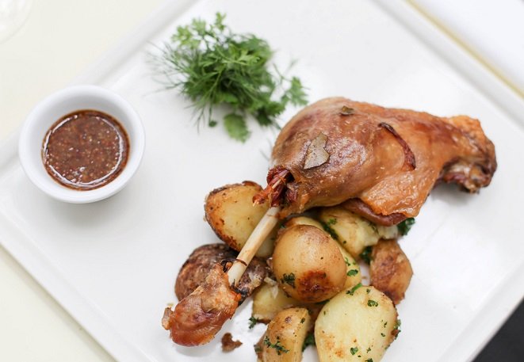
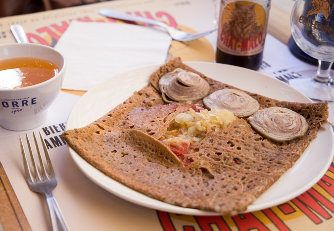
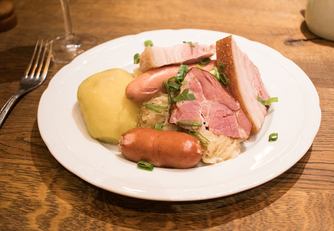
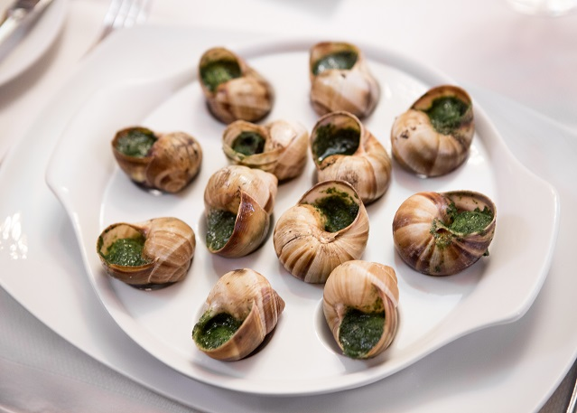

CONFIT DE CANARD
프랑스 남서부 지방의 특산물인 오리를 이용해 만든 요리이다. 오리다리를 오리기름에 넣고 낮은 온도로 약 두 시간 가량 서서히 익힌 요리인 오리 콩피이다. 요리에 쓰이는 오리 다리는 오리가슴살과 푸아그라와 함께 만들기도 하며 외부 공기를 차단해 단지에 기름과 함께 보관하면 몇 달에서 길게는 일 년까지 보존이 가능하다.
GALETTE
크레페는 프랑스의 브르타뉴 지방의 특산물이다. 브루타뉴 지방에는 기후가 척박해 밀보다 주로 메밀 반죽을 이용해서 만드러 바삭한 식감이 좋다. 햄이나 치즈, 가리비 관자, 혹은 설탕, 잼, 누텔라 등 속재료에 따라 맛은 무궁무진하다.


CHOUCROUTE
독일어로 사우어크라우트라고도 불리는 알자스 지방의 요리이다. 독일에 인접한 지역인 만큼 문화와 음식이 유사하다. 슈크루트는 양배추를 발효시켜 맛도 김치와 비슷한데, 보통 생선이나 고기와 많이 먹으며 알자스산 맥주나 화이트와인을 곁들이면 더 좋다. 크리스마스 마켓에서 쉽게 볼 수 있는 겨울 음식이다.
ESCARGOTS
에스카르고는 달팽이라는 뜻으로 말 그대로 달팽이요리이다. 껍질에서 살을 골라 마늘, 버터, 와인 등과 함께 조리한 다음 도로 껍질에 넣어 접시에 낸다. 이 밖에도 마늘, 타임, 파슬리, 잣 등을 추가적으로 넣기도 하며, 껍질 사이즈에 맞게 움푹 들어간 에스가르고 전용 접시를 주로 사용한다.
